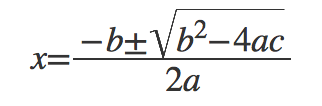

1. Arxius XML
1.1. Característiques principals
XML són les sigles de eXtensible Markup Language, i va ser definit el 1998 pel World Wide Web Consortium (W3C).
Els documents XML estan formats per una col·lecció d’elements. Cadascun d’ells està delimitat entre marques d’inici i de final (aquestes marques habitualment s’anomenen tags).
Tot document XML ha de presentar un únic element arrel, que encerclarà tots els altres elements. Aquest element arrel és únic (un i només un) i serà l’arrel de l’arbre d’elements que conformen el document.
S’ha de tenir en compte que l’especificació dels arxius XML diferencia entre majúscules i minúscules i cal tenir això present en la seva definició i manipulació.
Característiques d’un arxiu XML correctament formatat:
- Sempre comença per un pròleg.
- Cada marca d’apertura té la seva corresponent de tancament.
- Totes les marques estan completament niades (estructurades en arbre).
Característiques d’un arxiu XML vàlid:
- Ha de ser correctament formatat (criteris anteriors).
- Ha de contenir un enllaç a un esquema XML i ha de ser vàlid respecte d’aquell esquema.
1.2. Exemple d’arxiu XML
El següent és un arxiu XML correctament formatat i vàlid:
Arxiu biblio.xml
biblio.xml
<?xml version="1.0" encoding="UTF-8" ?>
<!DOCTYPE biblioteca SYSTEM "biblio.dtd">
<!-- Un exemple de base de dades bibliogràfica -->
<biblioteca>
<llibre isbn='978-0156837507'>
<idioma>en</idioma>
<titol>Solaris</titol>
<autor>Stanislaw Lem</autor>
</llibre>
<llibre isbn='978-2070575923'>
<idioma>fr</idioma>
<titol>Le Petit Prince</titol>
<autor>Antoine de Saint-Exupéry</autor>
</llibre>
<llibre isbn='978-8474103656'>
<idioma>ca</idioma>
<titol><![CDATA[La fi de l'eternitat]]></titol>
<autor>Isaac Asimov</autor>
</llibre>
<llibre isbn='978-0441010622'>
<idioma>en</idioma>
<titol>Dune</titol>
<autor>Frank Herbert</autor>
</llibre>
<!-- més llibres ... -->
</biblioteca>1.3. Consideracions de sintaxi
Observant l’exemple mostrat, destaquem les següents característiques en el seu format:
Els arxius XML, com es veu, sempre comencen per un pròleg que descriu l’arxiu XML mateix. Aquest pròleg pot ser mínim, com:
<?xml version="1.0"?>O pot contenir altre informació, com la codificació dels caràcters i altres propietats:
<?xml version="1.0" encoding="UTF-8" standalone="yes" ?>També s’ha de tenir en compte que un tag que no conté contingut al seu interior es coneix com a tag buit. Per exemple: “
<logo/>”.Els comentaris en XML es defineixen així:
<!-- comentari -->.Si hem d’incloure algun caràcter que pugui ser interpretat per la mateixa sintaxi de XML, haurem d’escapar-lo per prevenir la confusió amb el significat estàndard. Els caràcters que presenten escapament són els següents:
| Caràcter | Codi escapat |
|---|---|
& (ampersand) |
& |
< (menor que) |
< |
> (major que) |
> |
' (cometa simple) |
' |
" (cometa doble) |
" |
1.4. Seccions CDATA
En un arxiu o document XML, una secció CDATA és una secció de contingut d’un element que és marcat com a dades exclusivament, de manera que no s’interpreti el seu contingut com a ordres o marques de sintaxi.
Per tant, una secció CDATA és simplement una alternativa de sintaxi per expressar dades textuals, on cap caràcter especial hagi hagut de ser escapat (sense necessitat de < o &, per exemple).
La secció marcada CDATA ha d’estar encerclada de la següent manera:
<![CDATA[ ... text ... ]]>Tot el text inclòs en la secció CDATA serà interpretat com a caràcters literal, sense marques o referència a entitats.
Així doncs, si en un document XML haguéssim d’enregistrar una condició com (edat<40) && (tipus>3), ho podríem fer de dues maneres:
<condicio> (edat<40) && (tipus>3) </condicio>
<condicio><![CDATA[ (edat<40) && (tipus>3) ]]></condicio>Com es veu, la segona permet una lectura immediata, però ha d’estar encerclada entre les marques que defineixen la secció CDATA.
1.5. Esquemes XML
El mecanisme més senzill per proporcionar una sintaxi per a l’estructura d’un document XML determinat és la definició d’un DTD (Document Type Definition). N’hi ha altres tècniques, però aquesta és la més senzilla i còmoda, a més de formar part de l’estàndard original XML.
En aquest sentit, un esquema XML especifica formalment l’estructura del document XML, permetent:
- Validació: Assegurem que conté les dades correctes en els llocs correctes.
- Interoperativitat: Com que disposar de la sintaxi de l’estructura no genera dubtes, diferents equips de persones poden treballar en el document sabent de quina manera quedarà estructurada la informació.
- Generació de codi: Es poden utilitzar els esquemes XML per generar codi que permeti als desenvolupadors llegir i escriure documents XML seguint l’estructuració descrita. A aquesta tècnica se la coneix com Binding i serà estudiada en el curs. Existeix Binding XML de dades per a C#, C++, Java, Visual Basic, VB.Net, entre altres.
- Visualitzacions: És possible mostrar de manera adient l’estructura d’un arxiu XML si coneixem la seva sintaxi estructural. Així podem generar vistes sobre les dades del document o automatitzar processos de visualització de forma senzilla.
- Documentació: Un esquema XML pot contenir documentació, que serà processada a altres formats segons convingui.
Un exemple d’esquema XML en format DTD podria ser el següent:
biblio.dtd
Observi com s’indica que una biblioteca està formada per un o més llibres, que els llibres han de presentar tres elements al seu interior (idioma, títol i autor) i un atribut (el ISBN).
Observi també com s’ha especificat el tipus de dades dels diferents elements: el ISBN és CDATA (text directe) mentre que els elements idioma, títol i autor són text interpretat (que pot escapar-se o encerclar-se amb una secció CDATA).
1.6. Conclusions sobre l’ús de XML
Els avantatges més importants de fer servir arxius XML sobre altres tipus de format són:
- El contingut dels arxius XML és text pla.
- Representa dades sense definir com han de ser mostrades.
- Pot ser transformat en altres formats aplicant XSL.
- Pot ser fàcilment processat mitjançant parsers estàndard.
- Presenta una estructura jeràrquica.
Només destaca un inconvenient, i és que en alguns tipus de documents i dades genera un gran volum de marques per descriure correctament el contingut de dades del mateix. Un exemple d’això és MathML (que molt poca gent fa servir en productes comercials).
Observi el següent exemple de MathML:
<math xmlns="http://www.w3.org/1998/Math/MathML" display="block">
<mrow>
<mi>x</mi>
<mo>=</mo>
<mfrac>
<mrow>
<mo>−</mo>
<mi>b</mi>
<mo>±</mo>
<msqrt>
<mrow>
<msup>
<mi>b</mi>
<mn>2</mn>
</msup>
<mo>−</mo>
<mn>4</mn>
<mi>a</mi>
<mi>c</mi>
</mrow>
</msqrt>
</mrow>
<mrow>
<mn>2</mn>
<mi>a</mi>
</mrow>
</mfrac>
</mrow>
</math>El resultat d’aquest XML, aplicant-li un renderitzador adequat (per exemple, el navegador Safari n’incorpora un per defecte), serà visualitzat com a:

Aquesta mateixa fórmula, codificada en LaTeX, simplement és:
x=\frac{-b\pm\sqrt{b^2-4ac}}{2a}Resultant en:
\[ x=\frac{-b\pm\sqrt{b^2-4ac}}{2a} \]
Podem dir que XML és útil sempre i quan és evident aplicar-lo. Si quan l’apliquem, l’estructura és complexa i difícil de seguir i llegir, aleshores és millor alguna altra alternativa, excepte el cas en què volem un format uniforme que sempre tingui el mateix aspecte i estructura.
No és la finalitat d’aquest curs aprendre les interioritats i detalls menors en l’estructura de XML, però sí en farem ús i per tant hem d’estar familiaritzats amb els seus trets bàsics. D’aquí que s’hagi presentat una introducció al tema i no una anàlisi en profunditat.
2. Mètodes d’accés a arxius XML
Per accedir a les dades que estan emmagatzemades en un document XML, podem triar entre dues tècniques bàsiques:
El parser o analitzador sintàctic: Aquest mecanisme consisteix en recórrer l’arxiu XML per extreure la informació seguint les característiques estructurals que presenta. Requereix codificar (d’una manera o altre) la sintaxi de l’esquema utilitzat o proporcionar l’esquema externament, de manera que el parser pugui interpretar l’estructura de manera adequada.
El binding o vinculació de dades: Aquest altre mecanisme permet vincular les dades dels objectes i estructures del llenguatge amb els seus corresponents elements del document XML. D’alguna manera es realitza una sincronització entre la rèplica en memòria utilitzada pel llenguatge d’alt nivell i la representació emmagatzemada en el document XML al disc dur.
De la primera tècnica, el parser, nosaltres treballarem sobre la API de Java anomenada StaX; mentre que sobre la part de binding treballarem amb el API anomenat JAXB.
3. Una API Java de parser: StaX
La tècnica de parser consisteix en recórrer l’arxiu XML i anar descobrint els elements i tags que s’hi troben. En funció de cada cas, el lector anirà enviant la informació trobada a la variable, estructura o classe adient.
Per tant, el programador ha de tenir un coneixement clar de l’estructura del document XML (el seu esquema) i codificar l’anàlisi de l’esquema en el codi del programa. Per a estructures senzilles això no és gaire complicat, però per documents XML amb múltiples nivells jeràrquics, la cosa pot ser força incòmoda i feixuga.
Com a exemple, vegem la següent situació: Disposem de l’arxiu de biblioteca anterior biblio.xml i volem escriure un lector i un escriptor d’aquest format de document.
Observi ara l’exemple número 4
Com es veu, el programa desitjat hauria de llegir la biblioteca de l’arxiu, afegir dos llibres més i escriure la biblioteca en un nou arxiu anomenat biblio2.xml.
Tal i com s’ha codificat el programa, necessitem de dues classes noves: Biblioteca i Llibre per mantenir la informació en memòria.
La classe Llibre simplement és una típica classe POJO amb els mètodes setter i getter corresponents per a cada atribut del llibre. A més, una funció toString() que mostra la informació del llibre per pantalla.
Quant a la biblioteca, la cosa ja és més complexa, perquè no només és una llista de llibres, sinó que també hi implementem la lectura i escriptura en arxius XML. Aquesta classe presenta dues parts ben diferenciades:
Per una banda, tenim el fet que “una biblioteca és una col·lecció de llibres” i això ens comporta una declaració i uns mètodes relacionats.
Per altra banda, necessitem els mètodes que llegeixen i escriure la informació en arxius XML, i són les funcions
carregarXML()idesarXML(). Les dues reben el nom d’arxiu de què es vol llegir o on es vol escriure, respectivament.
Parlem ara dels mètodes relacionats amb XML (la part prèvia hauria de ser evident a la vista del codi).
3.1. Càrrega d’arxius XML
Quant a la càrrega des d’un arxiu XML, podrà observar en la codificació de la funció carregarXML() que requerim un objecte XMLEventReader que és el que va llegint i trobant elements dins de l’arxiu XML. Aquest objecte s’instancia a partir d’un lector d’arxiu de tipus FileInputStream.
Cada vegada que trobem un esdeveniment (amb er.hasNext()), hem de gestionar el seu significat en funció del tag o estructura que contingui:
- Si és un inici de tag
<llibre>, haurem de llegir l’atribut ISBN. - Si és un inici de tag
<idioma>,<titol>o<autor>, simplement llegim la dada continguda com a bloc de text. - Si és un tancament de tag
<llibre>, haurem de desar el llibre llegit a la biblioteca (cridantafegirLlibre()).
3.2. Escriptura d’arxius XML
Quant a l’escriptura a un arxiu XML, podrà veure a la funció desarXML() que hem de realitzar el procés invers al de lectura, generant esdeveniments (elements i atributs) que vagin afegint-se a l’arxiu. És un procés semblant al d’anar escrivint text mesclat amb variables amb funcions bàsiques com println(), però amb mètodes relacionats amb XML.
Observi com definim un XMLEventWriter que és l’encarregat de gestionar l’escriptura en arxiu amb un FileOutputStream com a destí de l’escriptura.
Observarà com es van enviant els diferents elements (inici de document, definició del DTD, afegir un comentari, inici del tag principal <biblioteca>) i aleshores passem a escriure, un a un, tots els llibres de la biblioteca. Posteriorment tancarem el tag de <biblioteca> i el document.
En el cas del format de sortida, s’ha volgut modificar el format, de manera que ara l’idioma sigui un atribut del llibre i no un element diferenciat. Per tant, per a cada llibre s’escriurà el tag d’obertura juntament amb el ISBN i l’idioma, i després el títol i l’autor en tags diferenciats. A més, tots els títols han d’aparèixer escapats dins d’un tag CDATA.
Observi també com s’han anat afegint tabuladors i finals de línia.
L’arxiu generat ha quedat així:
biblio2.xml
<?xml version="1.0" encoding="UTF-8"?>
<!DOCTYPE biblioteca SYSTEM "biblio.dtd">
<!--Un exemple de base de dades bibliogràfica-->
<biblioteca>
<llibre isbn="978-0156837507" idioma="en">
<titol><![CDATA[Solaris]]></titol>
<autor>Stanislaw Lem</autor>
</llibre>
<llibre isbn="978-2070575923" idioma="fr">
<titol><![CDATA[Le Petit Prince]]></titol>
<autor>Antoine de Saint-Exupéry</autor>
</llibre>
<llibre isbn="978-8474103656" idioma="ca">
<titol><![CDATA[La fi de l'eternitat]]></titol>
<autor>Isaac Asimov</autor>
</llibre>
<llibre isbn="978-0441010622" idioma="en">
<titol><![CDATA[Dune]]></titol>
<autor>Frank Herbert</autor>
</llibre>
<llibre isbn="978-84-615-9841-0" idioma="ca">
<titol><![CDATA[Oracle SQL és fàcil!]]></titol>
<autor>Fèlix Galindo Allué</autor>
</llibre>
<llibre isbn="0-13-027363-5" idioma="en">
<titol><![CDATA[Thinking in Java]]></titol>
<autor>Bruce Eckel</autor>
</llibre>
</biblioteca>Com veu, la tècnica és senzilla, però es fa llarga la codificació del programa si l’estructura jeràrquica té molts nivells intermedis. Pensi, per exemple, com s’hauria d’implementar un lector per a la fórmula MathML mostrada anteriorment!!!
4. Una API Java per a binding: JAXB
La tècnica anomenada binding consisteix en vincular un objecte o un grup d’objectes amb un document XML, de manera que pugui ser importat cap a aquests objectes i després exportat de nou cap al document:
Quan s’importa el document XML (unmarshalling), es crearan objectes Java associats a aquelles dades XML i amb els atributs assignats als valors que correspongui segons el contingut de l’arxiu XML.
Quan s’exporta el document XML (marshalling), els atributs i valors dels objectes Java seran desats a l’arxiu XML resseguint l’estructura de dades present als objectes.
Per a que tot això sigui possible, Java ha de conèixer els atributs i els seus noms associats al document XML. A més, els tipus de dada han de ser senzills: enters, text, llistes bàsiques, etc.
Per poder marcar aquestes qüestions s’utilitza una tècnica addicional anomenada annotation. Amb aquesta tècnica s’inclouen directrius que ajuden a discernir característiques i condicions sobre la vinculació dades–XML.
Vegem ara com es construiria una aplicació semblant a la anteriorment mostrada per al cas StaX. Considerem el mateix programa de prova i adaptem-lo a la nova tècnica.
Observi ara l’exemple número 5
Quant a la classe ProvaBiblioteca (el programa principal), només hi ha dos canvis importants: S’ha canviat la manera de carregar la biblioteca a un mètode estàtic i s’ha canviat el nom de l’arxiu resultant.
Per a la declaració de la classe Llibre observarà que, com abans, aquesta classe conté la definició dels atributs i els seus corresponents mètodes setter i getter.
A més, trobarà les següents annotations:
Amb
@XmlRootElement(name = "llibre")(línia 5) indiquem que el nom de l’element XML associat a aquesta classe és el tag<llibre>. Observi que la classe té la primera lletra en majúscules i Java és sensible a majúscules. Per això cal indicar la traducció.Amb
@XmlType(propOrder = { "idioma", "autor", "titol" })(línia 6) indiquem que aquesta classe té aquestes tres propietats associades amb els atributs del mateix nom. Això vol dir que haurà de cercar al document XML aquests tres elements dins del tag assignat a cada llibre.Amb
@XmlAttribute(línia 22) indiquem que el getter indicat a la línia següent correspon a un atribut del tag<llibre>, a diferència dels altres tres elements.
I per a la classe Biblioteca tindrem també algunes annotations:
Amb
@XmlRootElement(name = "biblioteca")(línia 8) indiquem com abans que el nom del tag associat a aquesta classe es dirà<biblioteca>.Amb
@XmlElement(name = "llibre")(línia 14) indiquem que aquesta classe és un receptacle de tags<llibre>. Com abans, s’indica just abans del getter d’aquest element. Els elements descoberts seran enregistrats internament alArrayListindicat a la línia 10.
Quan a les funcions de lectura i escriptura del document XML, comentar que:
- S’ha fet la funció de càrrega en forma estàtica, perquè la lectura que realitza JAXB ja retorna un objecte de la classe arrel.
- Sobre la forma de fer la lectura, veurà que el procés és força planer un cop es coneix. S’indica la classe arrel del document (en aquest cas la classe
Biblioteca) i el nom de l’arxiu al procés de unmarshalling. - Sobre la forma de fer l’escriptura, veurà que el procés és idèntic al de lectura, canviant el mètode al de marshalling.
- A més, en l’escriptura, s’ha indicat amb la propietat adient que volem que faci un bon formatat del document (amb tabuladors i retorns de línia). Si no es posa, el document XML resultant queda tot en una sola línia seguida.
El resultat de l’execució d’aquest programa és idèntic a l’anterior. El document XML resultant quedarà així:
biblio3.xml
<?xml version="1.0" encoding="UTF-8" standalone="yes"?>
<biblioteca>
<llibre isbn="978-0156837507">
<idioma>en</idioma>
<autor>Stanislaw Lem</autor>
<titol>Solaris</titol>
</llibre>
<llibre isbn="978-2070575923">
<idioma>fr</idioma>
<autor>Antoine de Saint-Exupéry</autor>
<titol>Le Petit Prince</titol>
</llibre>
<llibre isbn="978-8474103656">
<idioma>ca</idioma>
<autor>Isaac Asimov</autor>
<titol>La fi de l'eternitat</titol>
</llibre>
<llibre isbn="978-0441010622">
<idioma>en</idioma>
<autor>Frank Herbert</autor>
<titol>Dune</titol>
</llibre>
<llibre isbn="978-84-615-9841-0">
<idioma>ca</idioma>
<autor>Fèlix Galindo Allué</autor>
<titol>Oracle SQL és fàcil!</titol>
</llibre>
<llibre isbn="0-13-027363-5">
<idioma>en</idioma>
<autor>Bruce Eckel</autor>
<titol>Thinking in Java</titol>
</llibre>
</biblioteca>Com veu, inclou els 6 llibres correctament formatats seguint l’estructura dels objectes i les seves dades.
Evidentment aquesta tècnica és aparentment més còmoda, però es complica quan volem utilitzar tipus de dades diferents dels bàsics, o quan volem realitzar estructures XML complexes. No obstant, el codi generat ha estat mínim i resulta una bona primera aproximació per a la lectura i escriptura d’arxius XML senzills.